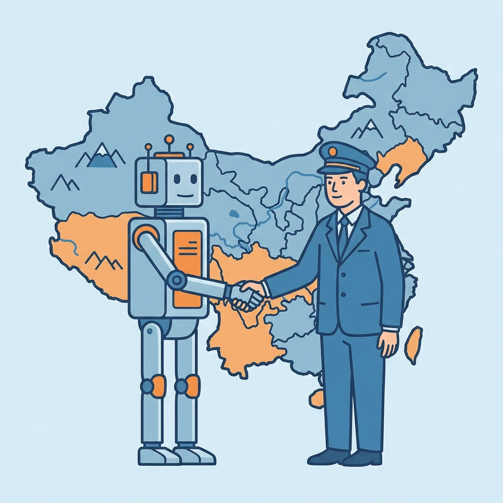
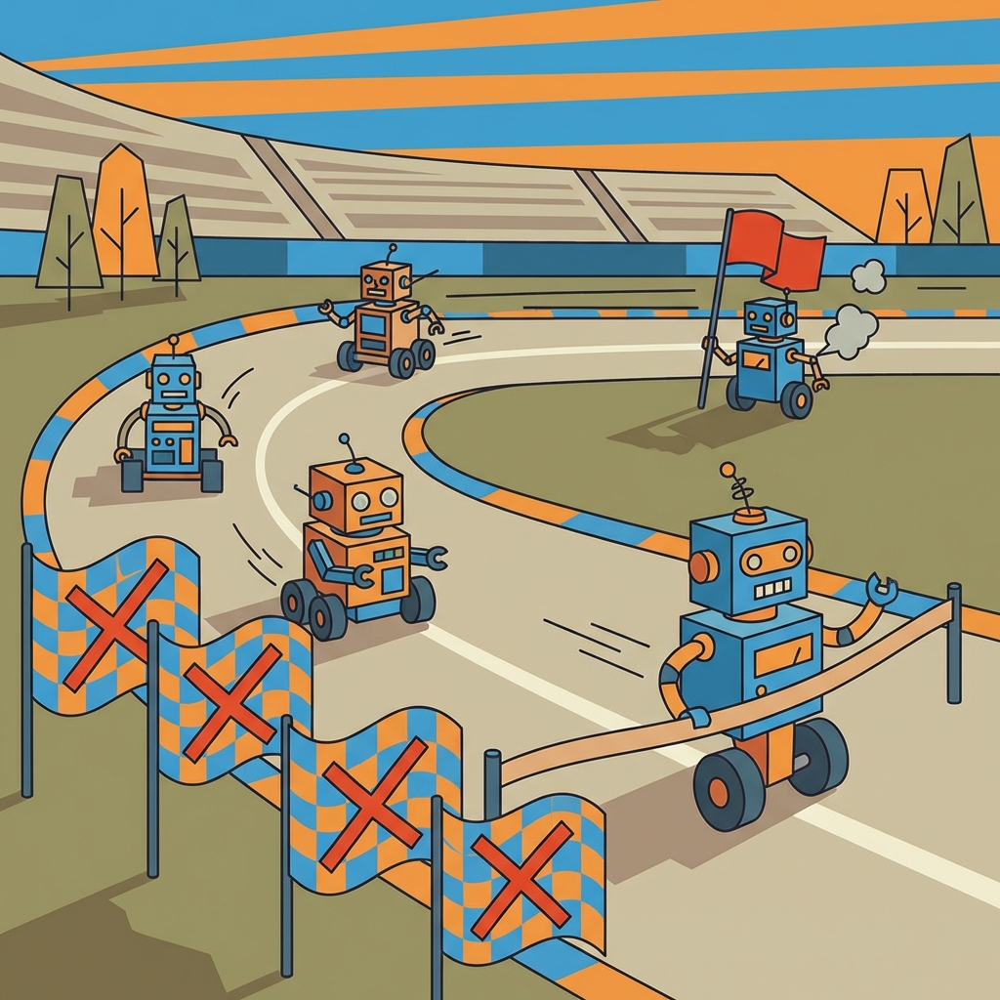
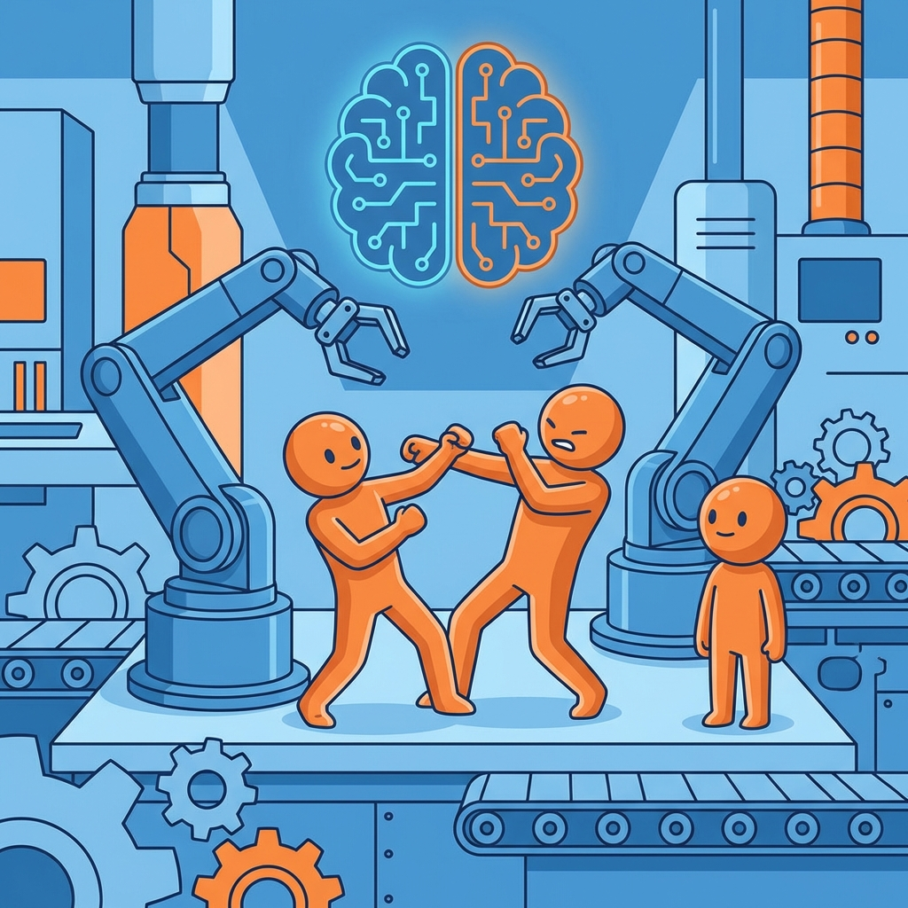
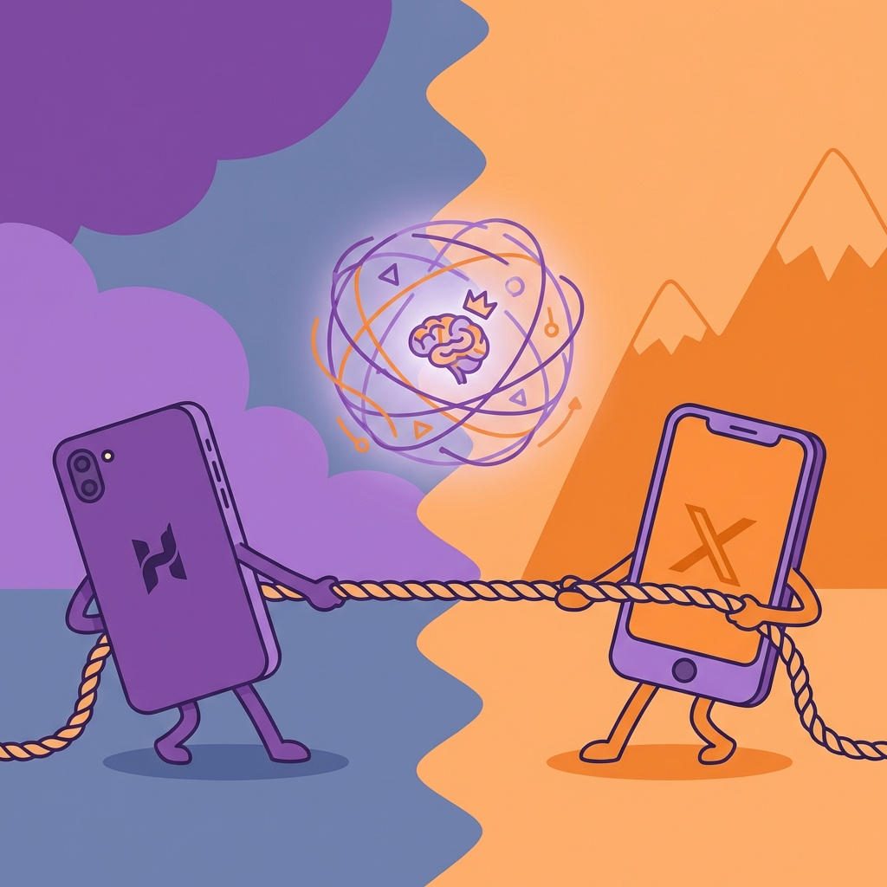
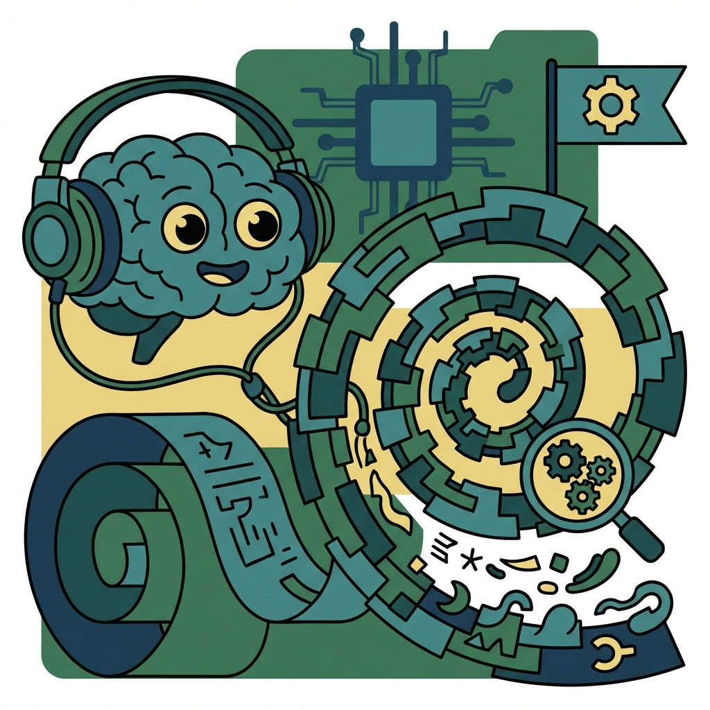
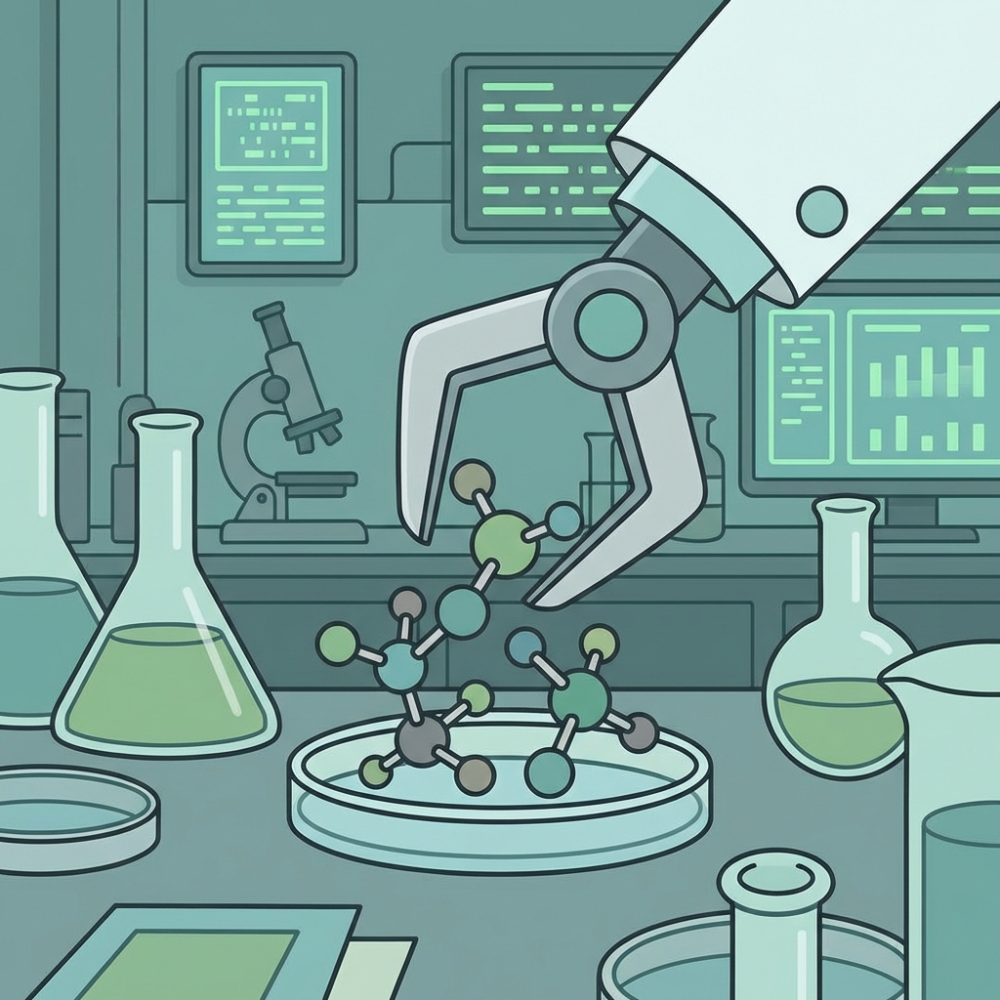
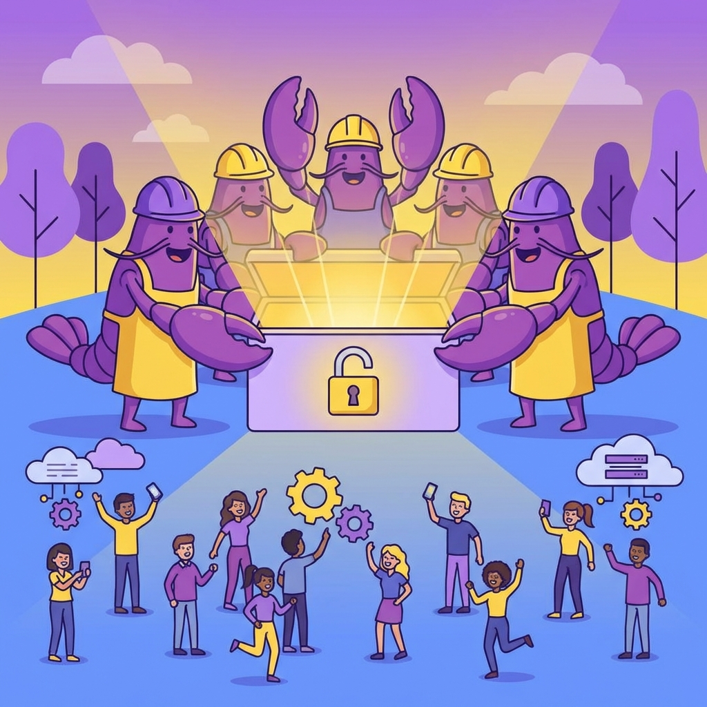
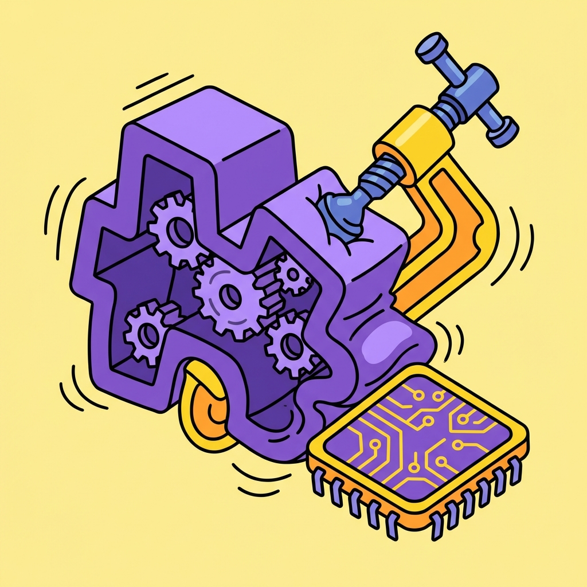
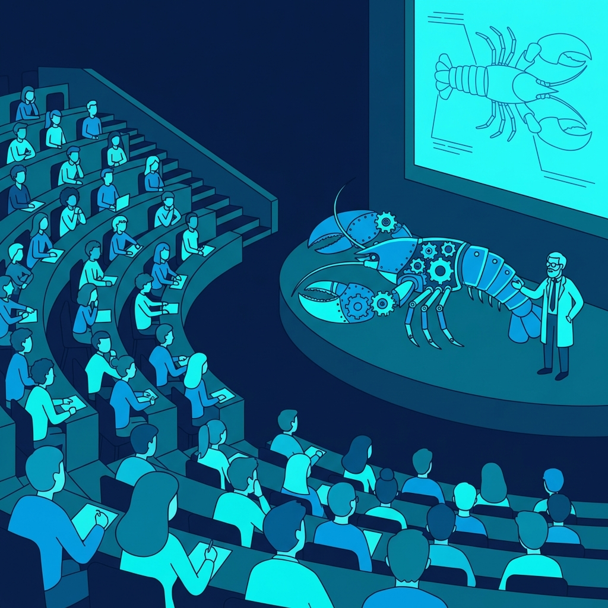
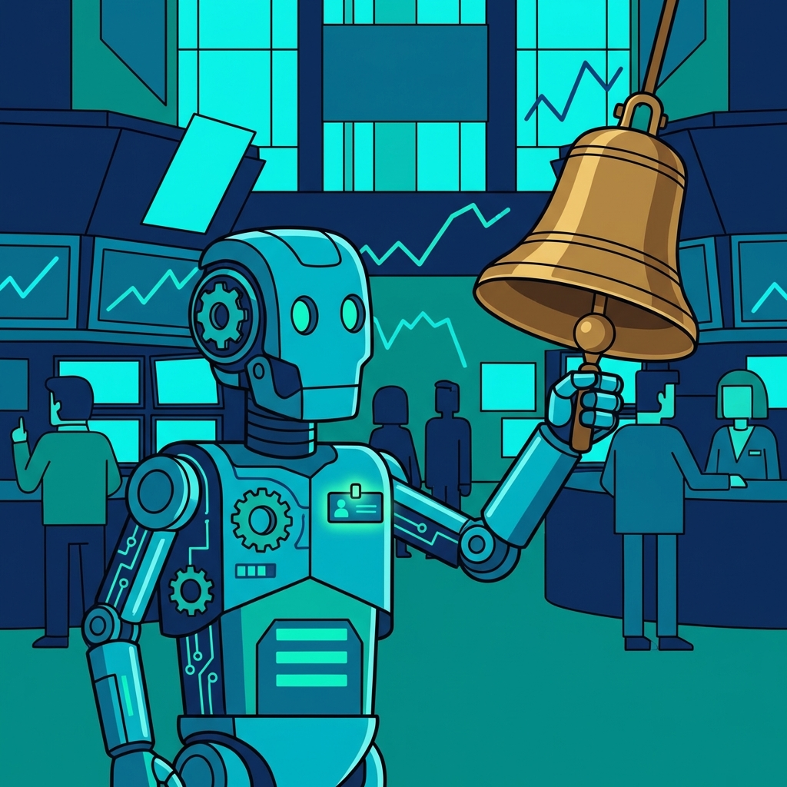

产业落地
重庆与宇树科技签约共建具身智能机器人西部创新运营中心
来源：中国新闻网 · 2026年03月26日
重庆大渡口区政府与宇树科技正式签约，共同打造具身智能机器人西部创新运营中心，重点推进产业顶层规划与商业落地。宇树此前刚完成科创板IPO受理，此次西部布局标志着具身智能产业化进程提速，西部城市正成为机器人产业的新战略高地。
查看原文 →刘强东"龙虾天团"携京东云首次开源基础大模型，单周用户暴涨300%；谷歌TurboQuant让大模型内存瘦身六倍；宇树科技联手重庆共建具身智能西部运营中心；RSAC 2026宣告AI SOC进入智能体驱动时代，网络安全Agent元年正式开幕。

重庆大渡口区政府与宇树科技正式签约，共同打造具身智能机器人西部创新运营中心，重点推进产业顶层规划与商业落地。宇树此前刚完成科创板IPO受理，此次西部布局标志着具身智能产业化进程提速，西部城市正成为机器人产业的新战略高地。
查看原文 →
随着政策、资本、技术三重利好叠加，具身智能已从实验室走向产业关键节点，但行业分化加剧——拥有高质量场景数据和真实落地场景的企业开始脱颖而出，缺乏数据积累的纯硬件公司面临出局风险。这场淘汰赛的本质，是"谁能让机器人真正干活"的竞争。
查看原文 →
在工业具身智能加速产业化的背景下，协作机器人领域的头部企业正大举进军人形机器人赛道。传统协作机械臂企业凭借成熟的精密制造能力和工厂客户资源，与专注人形整机的新势力展开正面竞争，工业具身智能的格局正在经历一次深刻重构。
查看原文 →腾讯微信内置AI Agent与阿里"悟空"平台的正面对决，成为3月最热科技话题。两者的核心分歧在于：微信以社交生态为抓手打造私域Agent，悟空则以钉钉企业工作流为阵地。谁能率先帮企业真正减少人力成本，谁就能赢得下一轮商业AI的话语权。
查看原文 →
华为和小米相继发布AI战略，均将"AI主权"定义为不依赖第三方平台的自研Agent生态。这场争夺的本质是：谁的Agent能留住用户、积累数据、形成不可替代的私有闭环。对企业营销而言，未来不是选哪个大模型，而是选哪家的Agent生态。
查看原文 →腾讯云在上海峰会上发布企业级Agent平台新主张，强调不追求技术炫技，而专注合规性、稳定性与业务集成度三大企业真实痛点。在AI Agent从"能跑"向"能用"过渡的关键节点，腾讯云的务实路线对工业和服务业的中大型企业具有较强参考价值。
查看原文 →
DeepMind的AlphaGenome完成对人类基因组非编码区的高精度解析后，其科研重心已转向三大前沿：虚拟细胞模型构建、跨物种材料科学突破和AI驱动的意识探索。这意味着AI在生命科学领域的边界正在快速扩展，从"读懂基因"到"理解生命运行机制"的跃迁已在路上。
查看原文 →
英矽智能推出PandaClaw，将AI Agent与生物信息学工作流深度整合，让生物学家可以通过自然语言指令驱动复杂的多组学分析流程。这是AI制药公司首次将OpenClaw类自主Agent能力引入新药靶点发现领域，将大幅压缩从数据到洞见的转化周期。
查看原文 →最新综述指出，科学知识图谱（SciKGs）正成为AI驱动科学发现的核心基础设施，在生物、化学、材料科学领域加速知识整合与假说生成。与大语言模型的协同将进一步释放AI在科研场景的潜力，这对国内科研机构的数字化转型具有重要借鉴意义。
查看原文 →• LeRobot - HuggingFace出品的机器人具身AI训练框架，支持真实硬件部署 GitHub
• PandaOmics - 英矽智能AI靶点发现平台，PandaClaw的底层引擎 GitHub
• BioKG - 生物医学知识图谱构建工具，支持多组学数据融合 GitHub
• OpenFold - 蛋白质结构预测开源框架，AlphaFold2的可训练实现 GitHub | HuggingFace

京东云将旗下大模型与OpenClaw框架整合后正式开源，发布通用基础大模型。上线首周用户增长300%，在电商、供应链、客服等场景的垂直能力获得市场认可。这是国内电商巨头首次以开源模式参与大模型生态竞争，对产业链上下游的AI工具替代具有直接影响。
查看原文 →
谷歌推出TurboQuant量化技术，专门针对大模型推理时的KV缓存（工作内存）瓶颈，将内存占用压缩至原来的六分之一，且精度损失极小。这一突破将显著降低长文本推理和复杂任务的运算成本，对企业私有化部署大模型的可行性和经济性有重要提升。
查看原文 →VBVR联合30余所顶尖高校发布百万级视频推理数据集，首次系统评测主流模型对空间、物理、逻辑和抽象推理的综合能力，发现即便是当前最强模型通过率也仅68%。这说明视频理解仍是AI的重要短板，为模型训练和产品选型提供了重要参考基准。
查看原文 →
西安交通大学人工智能与机器人研究所举办安全使用OpenClaw与OpenOcto的公开培训，重点讲解如何在学术和科研场景中规范使用AI Agent。近500名师生参与，体现高校正在系统性接纳AI Agent工具进入教学科研体系，这一趋势将加速AI原生人才培养。
查看原文 →全球顶级网络安全大会RSAC 2026将AI SOC（安全运营中心）的范式转移列为核心议题——从过去人工+AI辅助，升级为AI Agent自主完成威胁检测、研判和响应全流程。这意味着网络安全领域的人力密集型工作正迎来结构性自动化，对安全从业者的技能要求将深刻改变。
查看原文 →
OneAgent举办全球发布会，正式推出面向金融行业的专用AI智能体，覆盖自动化交易策略生成、风控决策和投研报告撰写等核心场景。金融是AI Agent落地门槛最高但价值最大的行业之一，OneAgent的发布标志着垂直行业专用Agent从概念走向规模化商用。
查看原文 →• OpenClaw - 本地部署开源自主AI Agent框架，三个月GitHub星标超越React和Linux GitHub
• Qwen2.5 - 阿里开源大模型系列，兼顾性能与成本，支持多语言多模态 GitHub | HuggingFace
• AutoGen - 微软多Agent对话协作框架，支持人机混合工作流 GitHub
• LangGraph - LangChain出品的有状态多Agent编排框架，支持循环与条件分支 GitHub